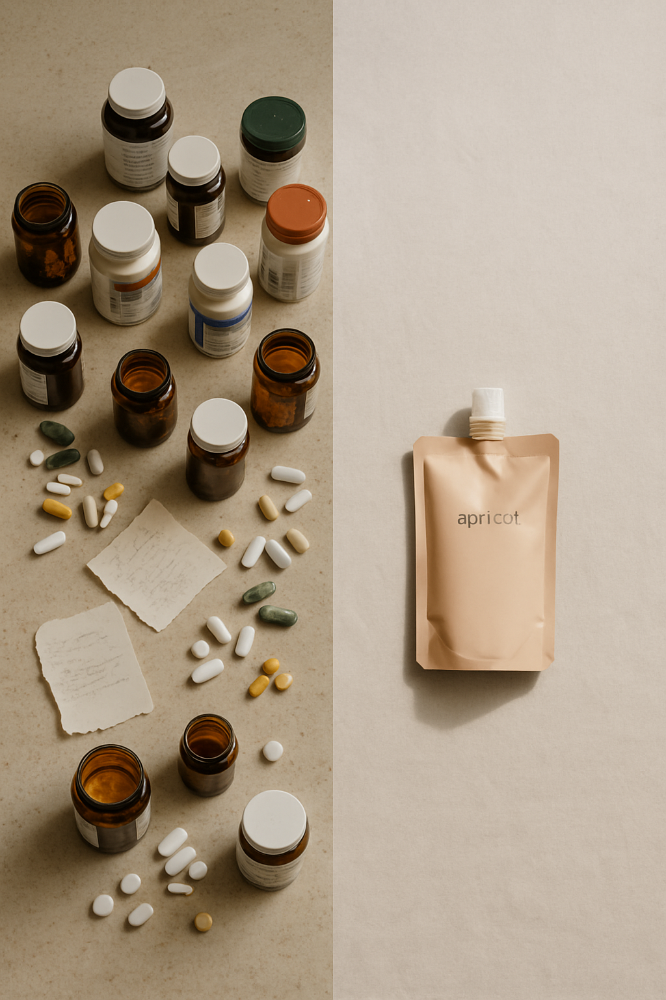
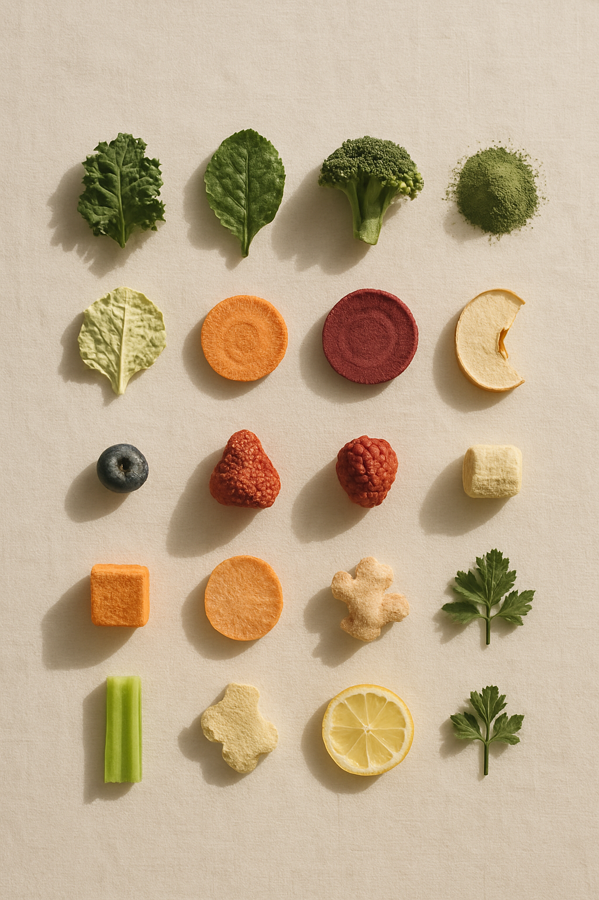

Alex · AVO 창업자
저도
못 먹어요.
솔직히, 매일 채소 350g.
Same brand thesis as Reel + Carousel #1 v5 — but founder-confession-first hook (Carousel #1 v5 led with topic-question; this one leads with Alex's admission). Score projection: 49/60.
| Slide | Beat | Asset |
|---|---|---|
| 1 | HOOK · "저도 못 먹어요." founder confession | avo_slide03_alex_candid_v1.png |
| 2 | STAT · 350g 한국영양학회 | avo_slide02_portion_v1.png |
| 3 | PROBLEM · 80 supplements chaos | avo_slide05_split_v1.png |
| 4 | SELF-TALK · "...뭐가 정답인지 모르겠음." | CSS quote card |
| 5 | TURN · "딱 하나만 정했어요" | avo_slide04_ritual_v1.png |
| 6 | IDENTITY · "마법이 아니에요. 결정이에요." | CSS identity layer |
| 7 | PRODUCT · 18 ingredients grid | avo_ep01_ingredients_grid_v1.png (NEW) |
| 8 | AUTHORITY · Daoom 1988 | AVO_Daoom_Factory_1.png (REAL) |
| 9 | PAYOFF · "마법의 약은 없어요" | avo_slide09_alex_writing_v1.png |
| 10 | CTA · "그날의 첫 결정" | avo_pouch_hero_001.png |
솔직히, 매일 채소 350g.

한 그릇 분이 아니에요.
두 그릇이에요.

비타민, 미네랄,
프로바이오틱스...
그래도 안 채워져요.
...뭐가
정답인지
모르겠음.
— 우리 모두의 / 화요일 아침.

커피 마시기 전에,
한 모금.
이건 마법이
아니에요.
결정이에요.
매일 하나만
바꾸는 사람 — / 그게 다예요.

동결건조해서 두유에
그대로 담았어요.

3대째예요.

매일 하는 작은 결정 — / 그게 전부예요.

AVO · 와일드 그린즈
프로필 링크에서 만나기.